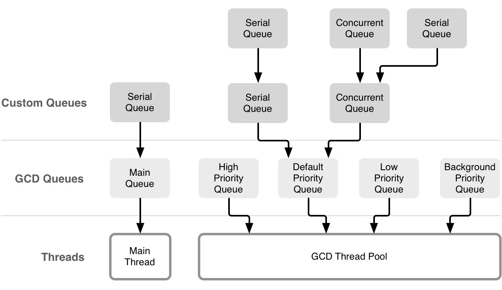

CS333
Mobile Development
Ilya Loshkarev loshkarev.i@gmail.com
Overview

Grand Central Dispatch
Concurrency & Parallelism

Queue Abstraction
Dispatch Queues
in their turn

Queue Type vs Task Type
| Queue | concurrent |
unordered |
|---|---|---|
serial |
ordered | |
| Task | async |
non blocking |
sync |
blocking |
Ghost of the Syntax Past
// Get some queue to put our task into
dispatch_async( dispatch_get_global_queue(
Int(QOS_CLASS_USER_INITIATED.rawValue), 0) )
{
/* do some heavy work */
dispatch_async(dispatch_get_main_queue()) {
/* present results to the user */
}
}
Depricated since iOS 10.0 👌
Calling for Dispatch Queues
// Get some queue to put our task into
DispatchQueue.global(qos: .userInitiated).async {
/* do some task */
DispatchQueue.main.async {
/* present results to the user */
}
}
Quality of Service
.userInteractive // highest priority
.userInitiated
.utility // default
.background // lowest priority
System prioritizes and schedules queues
according to their QoS attribute
Creating Dispatch Queues
let backgroundQueue = DispatchQueue(label: "com.app.queue",
qos: .background,
attributes: .concurrent)
backgroundQueue.async {
print("Dispatched to background queue")
}
Created queue can be accessed by label
Dispatch Groups
let group = DispatchGroup()
DispatchQueue.global().async(group: group){
/* do stuff */
}
group.wait() // wait for every task in group to complete
group.notify(queue: DispatchQueue.main) {
/* do this after every task in the group is completed */
}
Allow to perform barrier based synchronisation
Dispatch Semaphores
let semaphore = DispatchSemaphore(value: 10)
semaphore.wait()
/* access some shared data */
semaphore.signal()
Implementation of a traditional counting semaphore
Operation Queues
Operation
// Performs the receiver’s non-concurrent task
func main()
// The block to execute after the operation’s main task is completed
var completionBlock: (() -> Void)?
An abstract class you use to encapsulate the code and data associated with a single task
Operation Queue
let q = OperationQueue()
q.qualityOfService = .utility
q.maxConcurrentOperationCount = 10
q.isSuspended = true
let op = BlockOperation { /* do stuff */ }
op.completionHandler = { /* do other stuff */}
q.addOperation(op: op)
q.isSuspended = false
q.waitUntilAllOperationsAreFinished()
Operation Priority & Dependencies
let op = BlockOperation { /* do stuff */ }
op.queuePriority = .high
let dependentOp = BlockOperation { /* do other stuff */ }
dependantOP.addDependency(op) // requires 'op' to be completed
q.addOperation(op)
Operation Queue schedules operations according to their dependencies and priority
Operation Status
var isCancelled: Bool
var isReady: Bool
var isExecuting: Bool
var isFinished: Bool
var isConcurrent: Bool
Subclassing Operation
class FileringOperation: Operation {
var filter: CIFilter!
weak var imageView: UIImageView?
var result: UIImage?
func main() {
if isCanceled { return }
if let source = imageView?.image {
result = filter.apply(to: source)
}
}
}
Key-Value Coding
KVC
Key-value coding is a mechanism that allows objects to provide indirect access to their properties
// Returns the value for the property identified by a given key
func value(forKey key: String) -> Any?
// Sets the property of the receiver specified by a given key to a given value
func setValue(_ value: Any?, forKey key: String)
Adopting KVC
class KVCCompliant: NSObject {
var name: String = ""
}
let kvc: KVCCompliant
kvc.setValue("I'm a KVC Object", forKey: "name")
There is no explicit KVC protocol, but any subclass of NSObject is KVC compliant
Key-Value Observers
Key-value observing is a mechanism that allows objects to be notified of changes to specified properties of other objects
func observeValue(forKeyPath keyPath: String?, of object: Any?,
change: [NSKeyValueChangeKey : Any]?, context: UnsafeMutableRawPointer?)
func addObserver(_ observer: NSObject, forKeyPath keyPath: String,
options: NSKeyValueObservingOptions = [], context: UnsafeMutableRawPointer?)
func removeObserver(_ observer: NSObject, forKeyPath keyPath: String)
Responsible Observation
class MyObserver: NSObject {
var myContext = 88888888
override init() {
super.init()
objectToObserve.addObserver(self,
forKeyPath: #keyPath(Observed.propertyName),
options: .new, context: &myContext)
}
deinit {
objectToObserve.removeObserver(self,
forKeyPath: #keyPath(Observed.propertyName),
context: &myContext)
}
}
Responding to KeyValue Changes
override func observeValue(forKeyPath keyPath: String?, of object: Any?,
change: [NSKeyValueChangeKey : Any]?, context: UnsafeMutableRawPointer?) {
if context == &myContext {
if let newValue = change?[.newKey] {
print("Value changed: \(newValue)")
}
} else {
super.observeValue(forKeyPath: keyPath, of: object,
change: change, context: context)
}
}
Considered Harmful!
- Comes through one method
- Requires you to handle superclasses yourself
- Obscures control flow
- Can crash when deregistering
Property Observers
class Note {
var content: String {
willSet {
print("content will be set to \(content)")
}
didSet {
print("content has been set to \(content)")
}
}
}
Notifications
Observer Pattern

Notification Center

let defaultCenter = NotificationCenter.default
Notification
name: String // unique name
object: AnyObject? // sender
userInfo: [:]? // additional data
An object distributed through Notification Center
Post
defaultCenter.post(name: "MyNotification", object: self)
defaultCenter.post(name: "MyNotificationWithPayload",
object: self,
userInfo: ["payload" : myPayload])
Any notification should have a unique name within an app
It is a good idea to store notification names in an enumeration
Observe
defaultCenter.addObserver(self,
selector: #selector(myNotificationHandler),
name: "MyNotification", object: sender)
Calls self.myNotificationHandler
whenever MyNotification is posted
defaultCenter.removeObserver(self,
name: "MyNotification", object: sender)
Observers should be removed manually on deinit
Observe with Block
defaultCenter.addObserver(forName: "MyNotification",
object: sender, queue: nil) {
[weak self] notification in
/* handle notification */
}
Performs closure in specified queue
Strong references to self in closures
can create reference cycles
Concurrency
DispatchQueue.main.async {
defaultCenter.post(name: "MyNotification", object: nil,
userInfo: ["data":data])
}
Notification centers deliver notifications on the thread
in which the notification was posted
Core Data Notifications
defaultCenter.addObserver(self,
selector: #selector(managedObjectContextObjectsDidChange),
name: NSManagedObjectContextObjectsDidChangeNotification,
object: context)
Managed Object Context has three types of notifications
// NSManagedObjectContext ObjectsDidChange Notification
// NSManagedObjectContext WillSave Notification
// NSManagedObjectContext DidSave Notification
Context Did Change
func managedObjectContextObjectsDidChange(notification: NSNotification) {
// userInfo holds information about the changes
guard let userInfo = notification.userInfo else { return }
if let inserts =
userInfo[NSInsertedObjectsKey] as? Set<NSManagedObject> { }
if let updates =
userInfo[NSUpdatedObjectsKey] as? Set<NSManagedObject> { }
if let deletes =
userInfo[NSDeletedObjectsKey] as? Set<NSManagedObject> { }
}
Considered Harmful?
- Notifications make it harder to trace the flow of control
- Deinitialized observers crash the app
- Notification centers are not well suited for unit tests